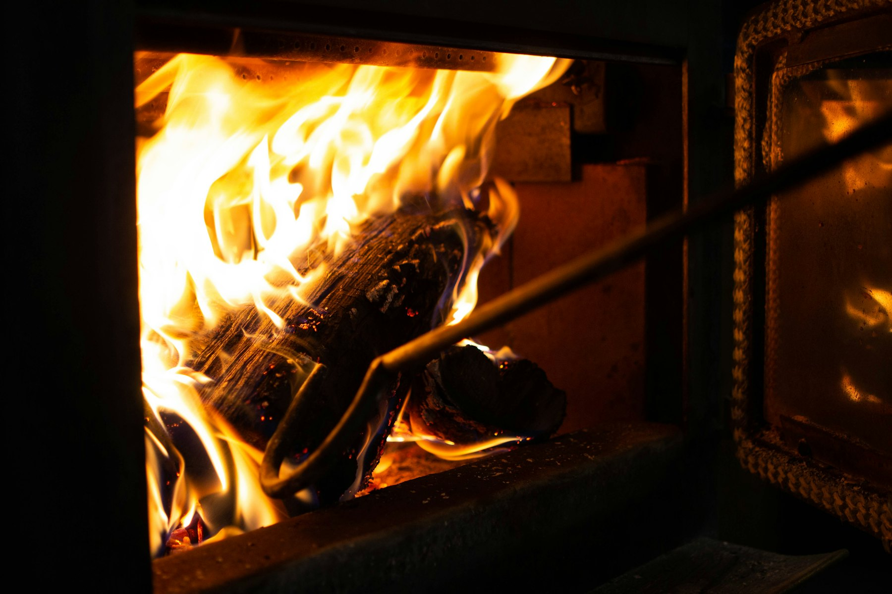
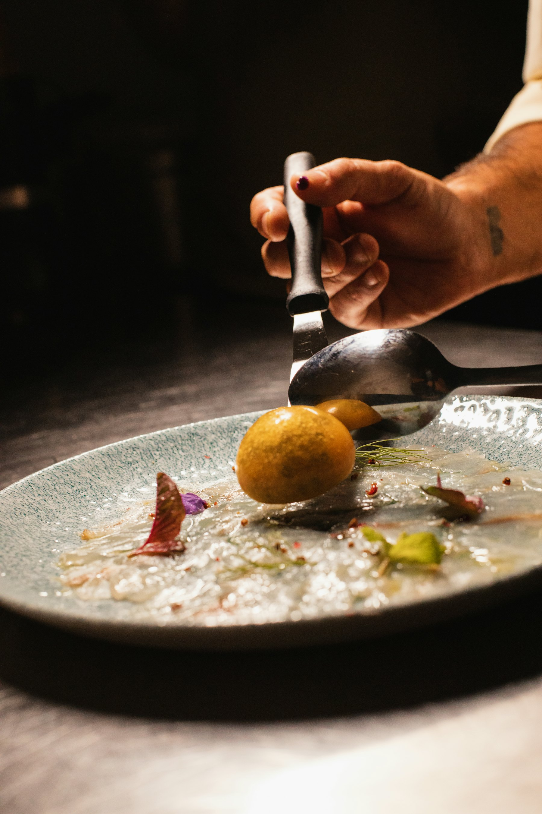

Viljakellari, jossa palaa tuli
Miten vuoden 1888 varastohuoneesta tuli keittiö, ja mistä ruoka tulee.


Huone rakennettiin pysymään kylmänä
Viljakauppias louhitutti kellarin kallioon vuonna 1888. Metrin paksuiset graniittiseinät, kolme tiiliholvia, yksi luukku kadulle. Sodan aikana siellä säilytettiin korttelin perunat. 1990-luvulla siellä seisoivat polkupyörät.
Kun avasimme sen vuonna 2023, säilytimme kaiken, mitä siellä oli, ja lisäsimme yhden asian: teräksisen tulipesän entisen luukun paikalle ja hormin, joka nousee vanhaa kuilua pitkin.

Yksi tuli, neljä tapaa kokata
Tuli sytytetään kolmelta iltapäivällä, ja koivu palaa sulkemiseen asti. Kala ja pihvit menevät liekkien päälle. Juurekset ja lammas viipyvät hiilloksessa tunteja. Silakka ja juusto saavat savun. Muutama asia ei kohtaa tulta lainkaan, koska joskus raakana on parasta.
Keittiössä ei ole kaasua. Kun tuli on matalalla, ruokalista odottaa.

Mistä ruoka tulee
Suurin osa ruoasta on pyydetty tai kasvatettu päivän ajomatkan päässä. Ostamme kokonaisia eläimiä ja kokonaisia kaloja, joten ruokalista seuraa sitä, mitä kukin antaa.
- SaimaaMuikkua ja kuhaa, verkolla
- MerenkurkkuSiikaa ja silakkaa
- AhvenanmaaLammasta ulkosaarten laitumilta
- RuovesiLaiduntanutta naudanlihaa
- SipooJuureksia, punajuurta ja omenoita
Tule alas istumaan tulen ääreen.
Avoinna tiistaista lauantaihin klo 17.00 alkaen. Kuusi tiskipaikkaa pidetään vapaana ilman varausta tuleville.
Varaa pöytä